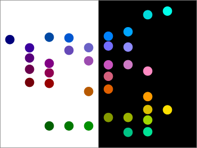

Here is a palette of colors in columns of equal brightness, with a
variety of chromas and hues:

Why does this matter?
Color brightness controls the legibility of text. But it is difficult to
calculate. Mistakes result in illegible text, and make reading
inaccurate, uncomfortable, and slow.
With this palette, an application designer can change colors for other
concerns without risking a loss of legibility.
Most computer monitors have a red, a green, and a blue rectangular
subpixel in each square pixel. Each of these can be activated to any
level from 0 through 255. The RGB colorspace corresponds to this
mechanical detail. A hexadecimal color code like #0080FF represents zero
activation of red, 128 (from the 80 in hexadecimal) activation of green,
and 255 (from the FF in hexadecimal) activation of blue. While
convenient for the computer, this colorspace doesn't correspond to
any aspect of human perception.
Lime (#00FF00) is much brighter than Blue (#0000FF)
, which is surprising from the hexcodes in isolation. We are not
interested in physical intensity of light, but in brightness as a
"perceptual correlate". Perceptual correlates are derived from
experimental data (participants are asked to judge which of two colors
is brighter, for example). Color scientists write as clear models as
they can to fit the data, but the underlying system is biological and
variable. The resulting math is opaque, at best.
What can we do?
Fortunately, the hard work implementing this math has already been done
by a library python-colormath*.
Using that, we can convert the RGB color gamut into a perceptually
uniform space**. From there, we just have to translate what we want into
mathematical constraints.
We want large and predictable contrast ratios***. Our colors will be on
contours of equal brightness, which are spaced evenly on a logarithmic
scale. This way, the constrast ratio of any two colors in our palette is
set by the number of brightness contours between them. Each of these
should be equally readable:
5-blue on 10-yellow
3-grey on 8-tan
1-green on 6-pink
We want a broad palette of chromas and hues. Within each brightness
contour, our colors should be spaced out with many saturated colors and
some unsaturated colors. To do this, we convert to a metric space, and
select points minimizing an imaginary energy field.
* This library is unmaintained! If you find it (or this page) useful,
please consider sponsoring a temporary maintainer!
** I chose CIECAM02, but ideally would have a model for luminous colors
instead of dyes.